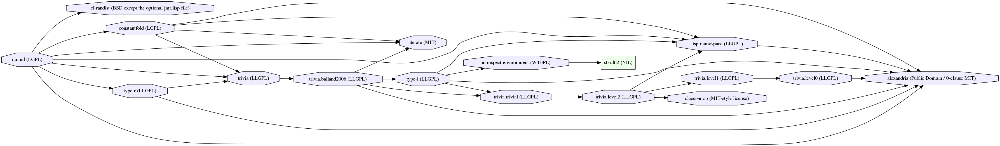

Numcl 
This is a Numpy clone in Common Lisp. At the moment the library is written in pure Common Lisp, focusing more on correctness and usefulness, not speed. Track the progress at https://github.com/numcl/numcl/projects/1 .

Goals
- Closely follow the numpy API, but still make it lispy.
- Delegate the documentation effort to Numpy community.
- Replace the Common Lisp array interface.
- We do not deviate from the traditional symbols/idioms in Common Lisp unless necessary. Therefore we provide symbols that conflicts the Common Lisp symbol. Math functions become aliases to the original CL functions when the inputs are not arrays.
- See ./DETAILS.org#packages .
Features/Contracts
- APIs are provided as functions, not macros.
- It is a design flaw otherwise.
- This does not mean the API is functional — we use procedural code.
- Still, zero overhead.
- The APIs are simply the wrappers over simple functions and designed to be fully inlined.
- Optimization will be done on the compiler side, not by macros.
- Operations are type-correct.
- They always return arrays of the most specific array-element-type. For example,
- (zeros 5) returns a bit vector.
- (asarray '(1 2 3)) returns an (unsigned-byte 2) vector.
- See ./DETAILS.org#types .
- NUMCL Arrays are CL arrays.
- As this library aims to extend Common Lisp (not to replace part of it) in a compatible way, we do not introduce custom structures/classes for representing an array.
- See ./DETAILS.org#representation .
Examples & documentation
./example.lisp contains a script that you can explore the functionality already implemented in NUMCL.
See DETAILS.org for the types available in numcl, and object representation.
Dependencies
NUMCL depends on https://github.com/numcl/constantfold . This library is at least tested on implementation listed below:
- SBCL 1.4.12 on X86-64 Linux 4.4.0-141-generic (author's environment)
- SBCL 1.5.1 on X86-64 Linux 4.4.0-141-generic (author's environment)
- CI tested on CCL, ECL.
Dependency graph:

Author, License, Copyright
Masataro Asai (guicho2.71828@gmail.com)
Licensed under LGPL v3.
Copyright (c) 2019 IBM Corporation